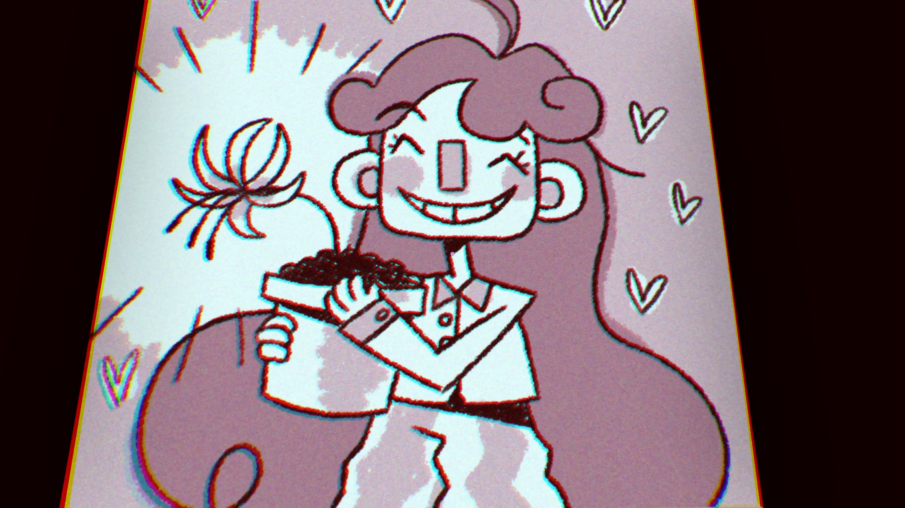

Dr. Habit's Diary
".....this is dads diary ....he rly luv'd his speial flower.. ..its sad i have never seen those flower seeds. only Rumors and Legends.. but maybe my brother running whack-a-molar would know something about it.." - Fortune Teller Carla

In Smile For Me, Dr. Habits past is mainly told through his lost Diary Pages. These Diary Pages document Dr. Habits past of abuse, bullying, and overall negativity. These Diary Pages show he is unhappy as a dentist. He did not choose to be a dentist, but was rather forced into it. By reading through them, the player learns that he's always wanted to be a florist, but was not allowed by his abusive parents. These pages also document other parts of his history, such as his most prominent bully, Martha (who Martha, the machine, is named after), or his displeasure with his missing teeth (which some fans theorize being due to physical abuse).
These Diary Entries are also key to achieving the good ending in Smile For Me. In order to achieve the Good Ending, not only do you have to make every Habititan happy, but you have to collect every Diary Entry (if you do not know what you're doing). By reading them in order, you are able to see how to grow the Erythronium seed, which you first get by completing Millie Coulro's questline. The steps are as follows: Plant the seed in your room, give it a kiss (able to do so after Jerafina Tabouli's questline), give it a drink (able to be achieved from Jimothan Botch once you have the Janitors ID), and finally, brush its teeth (the toothbrush is found behind a poster in the stairwell, the toothpaste is found in the Lounge bathroom). By completing all of these steps, the player will have successfully grown a Tooth Lily which, upon giving it to Dr. Habit, will calm him down and "take him back", allowing the player to make him happy and befriend him. As for the diary pages, they are each found by completing quests for Trevor, Trencil, Gerry, Tim Tam, and by getting the high score in the Whack a Molar game. These characters give off the Diary Entries due to their questlines not being essential to completing the game.
Below, each Diary Entry can be viewed: